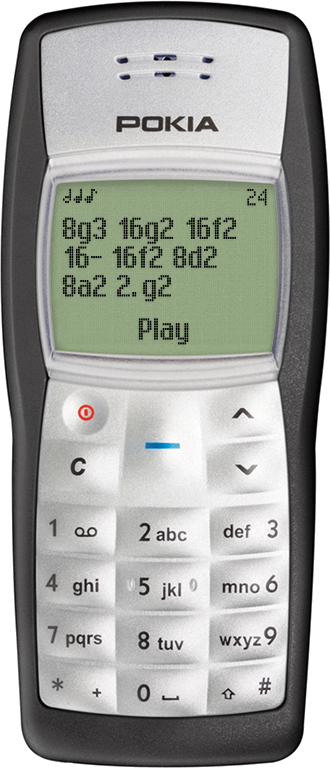
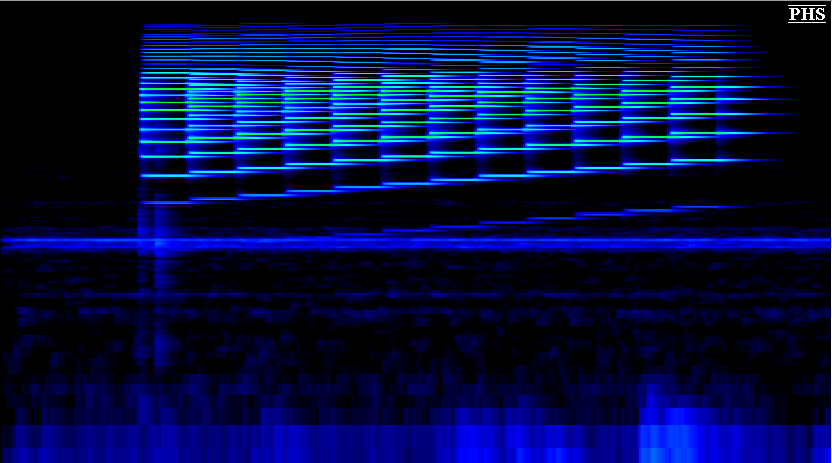

Play with the Pokia
First off, go play with it. You'll need a browser with Web Audio. I think you might enjoy composing a song or two.
Now that you are back, I can tell you a story all about how I made this thing.
Why did you make this?
I recently bought a new phone. It is a Nokia 1100b. I bought it because I wanted a phone with a monochrome (sunlight readable, high contrast) screen and excellent battery life. (The Nokia 1100 models get "up to 400 hours" of standby battery life.) Also, they still make new batteries for this phone: that was another important consideration. I also wanted a ringtone composer. The 1100 was still being sold new for TracFone until recently, so I picked up a brand new one off of eBay.
I played around with composer, entering in stuff like "8#f3 8#g3 16#c3 8#d3 16#c3 16d3 16#c3 8b2 8b2 8#c3 8d3 16d3 16#c3 16b2 16#c3 16#d3 16#f3 16#g3 16#d3 16#f3 16#c3 16#d3 16b2 16#c3 16b2 8#d3 8#f3 16#g3 16#d3 16#f3 16#c3 16#d3 16b2 16#c3 16#d3 16d3 16#c3 16b2 16#c3 8d3 16b2 16#c3 16#d3 16#f3 16#c3 16d3 16#c3 16b2 8#c3 8b2" and "8a1 8- 16a1 32a1 32a1 32g1 16a1 32- 8a1 8- 16a1 32a1 32a1 32g1 16a1 32- 8a1 16- 8c2 8a1 8g1 16f1 16- 16d1 16d1 16e1 16f1 16d1". I'm not very good at composing music, so I just found some ringtones on YouTube or various ringtone websites. I mostly had a lot of fun with it, but sometimes a ringtone was no good: out of tune, missing notes, piece of sound trash.
It is the ultimate prank. Make someone spend 10 minutes entering the ringtone into their phone and then punish them with crap like this "4- 8e1 8e1 8#g1 8#g1 4#f1 4e1 4#g1 4#d1 4#d1 4e1 8- 8e1 8#g1 8#g1 4#f1 4e1 4#g1 4#d1 4#d1 4e1 8e1 8e1 8#g1 8#g1 4#f1 4e1 4#g1 4#d1 4#d1 8e1 4#d1 4e1 4- 8e1 8#f1 8#g1 8#f1 16e1 8#d1". It's all bad, but the ending of that is totally yuck. The ending should be more like "4- 8e1 8e1 8#g1 8#g1 4#f1 4e1 4#g1 4#d1 4#d1 4e1 8- 8e1 8#g1 8#g1 4#f1 4e1 4#g1 4#d1 4#d1 4e1 8e1 8e1 8#g1 8#g1 4#f1 4e1 4#g1 4#d1 4#d1 8e1 4#d1 4e1 4- 8e1 8#f1 8#g1 4#f1 8e1 4.#d1", I think.
Anyhow, at first I set out to make a Unix program that you send text to and it makes your PC speaker beep. I stopped when I thought that that wouldn't be that cross-platform and I discovered something called Web Audio. Like my GPGPU project, this was a way to make something cross-platform with hot new web technologies. But most importantly, it was a way to synthesize any sound I wanted! PC speakers don't sound much like any monochromatic Nokia phones, you know. So that's what I set out to make this thing.</p>
At first, it was just a simple page with an image of an 1100 on it. When you load the page, it played a song. This was a bit boring, so I made the whole thing interactive. Gradually, it got more and more like the real phone until it became the horrible skeuomorphic ringtone player you see today.
How does it sound like a real Nokia?
Short answer: by using Web Audio's wave table synthesizer. A longer answer is to follow.
I looked at a spectrogram of some recordings I made of my Nokia 1100b playing back the chromatic scale. I didn't see much of interest in the frequency domain, so I had a look in the time domain. Each note looked like a damped sine wave. After trying to take the Fourier transform of an equation for a damped sine wave and failing (as I've been away from math for too long), I just used SpectraPLUS to take an FFT of a single note. I then popped those coefficients into a Web Audio oscillator's wave table and bam, a nice Nokia sound.
Pokia? I thought it was Nokia?
Pokia is Patater's Nokia. It is a portmanteau. And don't end non-questions in question marks, silly.
This Sucks
If you didn't notice, it does have some limitations, unfortunately. On a real phone, you'd have to navigate some menus to change the tempo or even to play the song. I wanted to have a simpler interface, so some sacrifice was thought necessary. Feel free to complain about it.